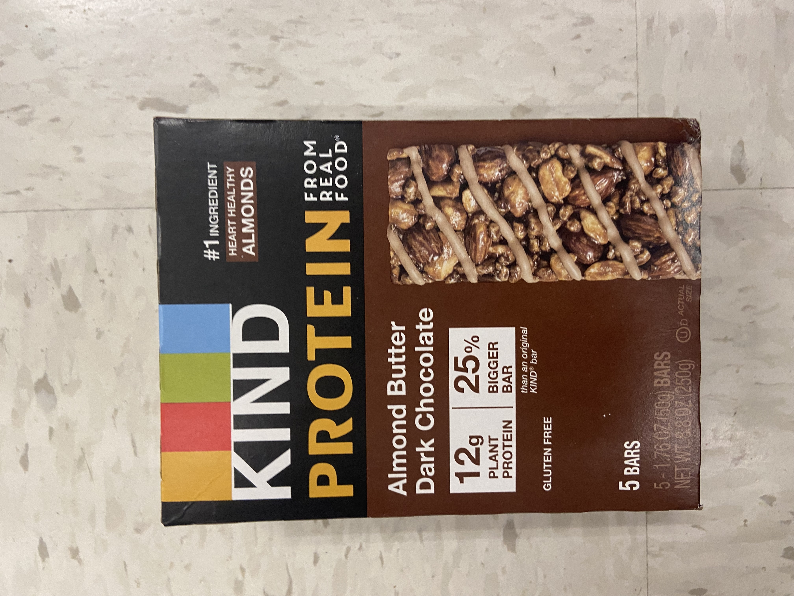
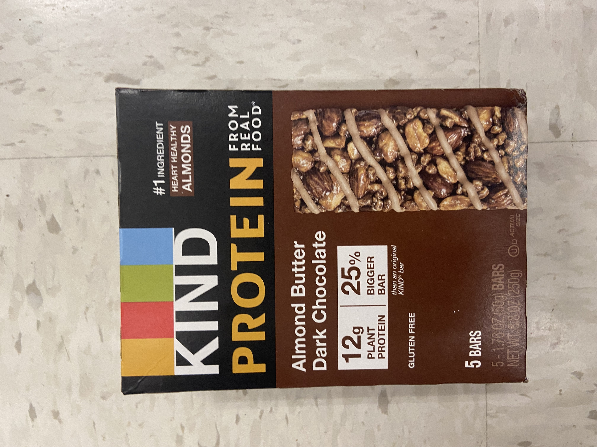

If you ask any skier what their all-time favorite day of the year would be, I can almost guarantee they’d respond back with the day their local mountain opens their doors for the first time as the skiing season begins. It’s an incredibly exciting sport that never gets old as you take in the beautifully lush mountain environment. However, with little preparation anyone can easily get hurt while sliding down the mountain and having an awful experience. If you’re thinking of skiing for the very first time, this is the place to gather some tips and tricks while learning the basics before running down your very first groomer!
As someone whose been highly active in the winter sport for over a decade and now skis for the Syracuse University team, I’ve gathered some incredibly helpful tips along the way. So let’s get started…

Attire – Since skiing is a winter sport, that obviously means that you should be dressed in LAYERS, the more the better. I always follow my three-layer strategy. The first layer should be thermal to wick sweat away and dry fast to keep you warm while reregulating body temperature, the second layer should be a fleece or wool jumper (these two materials are best at keeping your body heated), the third layer should be a high-quality waterproof and windproof jacket as well as snow pants. Remember you can always take layers off, but you can’t put more on. If you still find yourself cold, you can invest in hand and feet warmers that can slide into your boots and gloves to provide ultimate warmth. They are often old at any local pharmacy store as well as Amazon.
Equipment - One of the most crucial tips to follow before your first season is to resist the urge to buy the latest insanely expensive equipment. You should always rent for your first season to, this way you get the chance to try the sport before you decide to officially commit to it and spend thousands of dollars on proper gear.
 

Arrive early - Getting to the mountain as soon as it opens will allow you to settle in and get comfortable as you find the perfect parking spot, on top of this you are able to get all your money’s worth when you buy a day pass which are typically quite expensive
Go easy - New skiers often push themselves too hard and too fast, completely overextending themselves. Learning how to properly ski is a slow process and it’s important to remember that your safety should come before all else. On top of this, going quickly often prevents beginners from focusing on their technique and can lead to serious injury.
Staying energized – Skiing is a taxing sport to say the least, so proper nutrition is key, make sure to eat a protein heavy breakfast. It’s important to stay hydrated throughout the day and pack a few snacks in your jacket to ensure your energy stays up throughout the day.